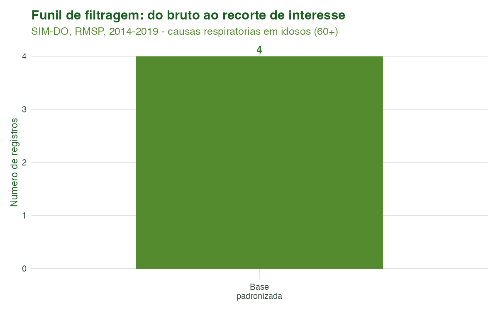
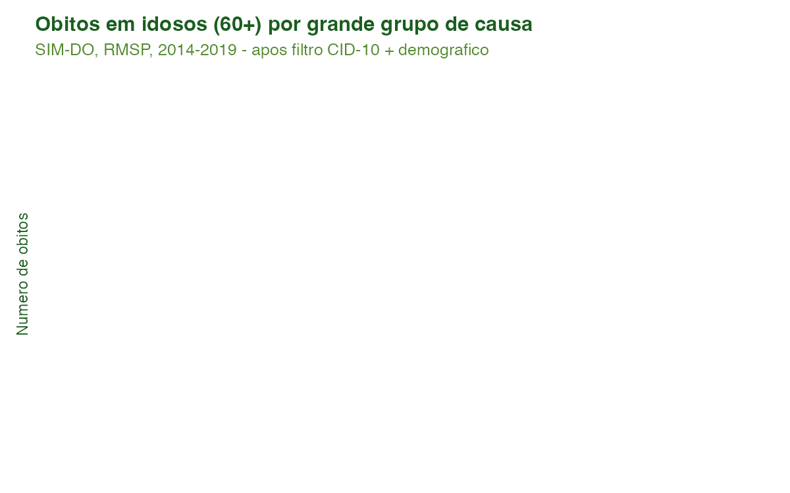

Tutorial 3: Filtragem por Doença (CID-10) e Demografia
Equipe climasus4r
10/07/2026
Source:vignettes/03-filtragem.Rmd
03-filtragem.RmdObjetivo
Ao final deste tutorial você será capaz de recortar os microdados de saúde já padronizados segundo dois eixos complementares:
-
Por doença (CID-10) — com
sus_data_filter_cid(), selecionando códigos específicos, intervalos, capítulos inteiros ou um dos 50+ grupos de doença predefinidos do pacote; -
Por características demográficas — com
sus_data_filter_demographics(), restringindo por sexo, raça/cor, faixa etária, escolaridade, região ou município.
Você também conhecerá sus_data_cid_select(), um
explorador interativo que ajuda a descobrir os nomes
dos grupos de doença sem precisar memorizar códigos CID-10.
A filtragem é a terceira etapa do pipeline
(import → clean → stand → **filter_cid → filter_demo** → derive → aggregate → …).
Ela exige que os dados já tenham sido padronizados (estágio
stand); por isso as funções abortam com uma mensagem
orientadora caso recebam dados em estágio anterior.
Contexto científico
Estudos de clima e saúde raramente analisam todos os óbitos ou internações de uma vez: o interesse recai sobre desfechos sensíveis ao clima em subpopulações vulneráveis. A literatura é consistente ao mostrar que os extremos térmicos afetam de forma desproporcional as causas respiratórias (CID-10 capítulo J, J00–J99) e cardiovasculares (capítulo I, I00–I99), sobretudo entre idosos (Gasparrini et al., 2015; Bhaskaran et al., 2013).
A Classificação Internacional de Doenças, 10ª revisão
(CID-10), organiza as causas em capítulos identificados por
letra inicial e em códigos de três a quatro caracteres (OMS, 2016). O
climasus4r traduz essa estrutura em uma sintaxe de
filtragem flexível — código único, intervalo ("J00-J99"),
capítulo ("J") ou grupo nomeado
("respiratory") — e detecta automaticamente a coluna de
causa adequada a cada sistema do DATASUS
(CAUSABAS/causa_basica no SIM,
DIAG_PRINC/diagnostico_principal no SIH).
Recortar antes de agregar é também uma boa prática
de reprodutibilidade: o objeto climasus_df registra no seu
histórico exatamente quais códigos e critérios demográficos foram
aplicados, tornando o estudo auditável.
Caso condutor. Investigamos a temperatura e os desfechos de saúde em idosos (60+) na Região Metropolitana de São Paulo, 2014–2019. Neste tutorial recortamos, a partir da base padronizada do Tutorial 2, as causas respiratórias (J00–J99) e cardiovasculares (I00–I99) e restringimos à população idosa (60 anos ou mais) residente na RMSP. O objeto filtrado alimenta o Tutorial 4 (Criação de Variáveis e Agregação).
Dados utilizados
Entrada: vignettes-pt/dados/caso_padronizado.rds — a
base SIM-DO padronizada produzida pelo Tutorial 2
(colunas canônicas como causa_basica,
age_years, sex,
residence_municipality_code). O script carrega esse
.rds com guarda file.exists(); se ele ainda
não existir (Tutorial 2 não executado), segue com um exemplo
mínimo sintético apenas para produzir os artefatos
didáticos.
| Recorte | Critério | Função |
|---|---|---|
| Causas respiratórias | CID-10 J00–J99 (disease_group = "respiratory") |
sus_data_filter_cid() |
| Causas cardiovasculares | CID-10 I00–I99 (icd_codes = "I00-I99") |
sus_data_filter_cid() |
| Idosos | age_range = c(60, Inf) |
sus_data_filter_demographics() |
| RMSP | municipality_code = <códigos IBGE> |
sus_data_filter_demographics() |
Pipeline completo
Os blocos abaixo reproduzem o que o script
scripts/tutorial_03_filtragem.R executa. Comece carregando
o pacote e a base padronizada do tutorial anterior:
library(climasus4r)
# Saída do Tutorial 2 (Encoding & Padronização):
caso_padronizado <- readRDS("vignettes-pt/dados/caso_padronizado.rds")
obitos_std <- caso_padronizado$obitos # SIM-DO padronizado (estágio "stand")Explorar grupos de doença
sus_data_cid_select() ajuda a descobrir quais
grupos existem e quais são sensíveis ao clima,
sem abrir o código-fonte. Em modo interativo
(output = "browser") abre uma interface HTML; em modo
"console" devolve, de forma invisível, um
data.frame com os grupos:
# Interface interativa no navegador (padrão):
sus_data_cid_select(lang = "pt")
# Apenas os grupos sensíveis ao clima:
sus_data_cid_select(lang = "pt", filter_climate = TRUE)
# Sem abrir o navegador — devolve o data.frame de grupos:
grupos <- sus_data_cid_select(lang = "pt", output = "console", verbose = FALSE)Filtrar por CID-10
Há duas formas equivalentes de recortar as causas respiratórias e
cardiovasculares: pelo grupo nomeado (mais legível) ou
pelo intervalo de códigos (mais explícito). A coluna de
causa (causa_basica, no SIM-DO) é detectada
automaticamente a partir dos metadados do
climasus_df.
# (a) Respiratório (J00-J99) por grupo de doença:
resp <- sus_data_filter_cid(
df = obitos_std,
disease_group = "respiratory", # equivale a icd_codes = "J00-J99"
match_type = "starts_with", # "J18" casa "J18", "J18.0", "J18.9"
backend = "tibble", # "arrow" (lazy) ou "tibble" (em memória)
lang = "pt"
)
# (b) Cardiovascular (I00-I99) por intervalo de códigos:
cardio <- sus_data_filter_cid(
df = obitos_std,
icd_codes = "I00-I99", # equivale a disease_group = "cardiovascular"
match_type = "starts_with",
backend = "tibble",
lang = "pt"
)Filtrar por demografia (idosos 60+ na RMSP)
Encadeamos o recorte demográfico sobre o subconjunto respiratório. O
argumento age_range = c(60, Inf) exige a coluna
age_years; o recorte espacial usa códigos
IBGE dos municípios da Região Metropolitana de São Paulo:
# Municípios da RMSP (códigos IBGE de 7 dígitos):
RMSP <- c("3550308", "3548708", "3509502", "3548500",
"3547809", "3530607", "3534401", "3505708")
resp_idosos <- sus_data_filter_demographics(
df = resp,
age_range = c(60, Inf), # idosos: 60 anos ou mais
municipality_code = RMSP, # recorte espacial: RMSP
drop_ignored = FALSE, # TRUE removeria sexo/raça "Ignorado"/NA
backend = "tibble",
use_cache = TRUE,
lang = "pt"
)
cardio_idosos <- sus_data_filter_demographics(
df = cardio,
age_range = c(60, Inf),
municipality_code = RMSP,
backend = "tibble",
lang = "pt"
)Você também pode filtrar por nome de cidade (tolerante a acentos e a erros de digitação), por sexo/raça/escolaridade ou por região predefinida:
# Por nome de cidade (em vez de código) e por sexo:
mulheres_sp <- sus_data_filter_demographics(
df = resp,
sex = "Feminino",
city = "Sao Paulo", # aceita acento; faz correspondência aproximada
lang = "pt"
)
# Por macrorregião (atalho que resolve para um conjunto de UFs):
sudeste <- sus_data_filter_demographics(resp, region = "sudeste", lang = "pt")Ao final desta etapa temos resp_idosos e
cardio_idosos — os recortes de interesse
que serão salvos e alimentarão o Tutorial 4.
Características das funções
sus_data_filter_cid()
Filtra por CID-10. Exige icd_codes ou
disease_group (se ambos forem fornecidos, prevalece
disease_group). A coluna de causa é detectada
automaticamente pelo sistema (SIM → causa_basica,
SIH → diagnostico_principal).
| Argumento | Essencial? | Descrição |
|---|---|---|
df |
sim |
climasus_df no estágio stand ou
posterior |
icd_codes |
um dos dois | Código(s)/intervalo(s): "J18.9",
c("I21","I22"), "J00-J99"
|
disease_group |
um dos dois | Grupo nomeado: "respiratory",
"cardiovascular", "dengue", … |
icd_column |
opcional | Coluna de causa; NULL = autodetecção |
match_type |
opcional |
"starts_with" (padrão), "exact",
"range"
|
backend |
opcional |
"arrow" (lazy, padrão) ou "tibble" (em
memória) |
lang / verbose
|
opcional | Idioma ("pt"/"en"/"es") e
mensagens |
Retorno: um climasus_df filtrado
(estágio filter_cid), preservando todas as colunas
originais e registrando no histórico os códigos/grupos aplicados.
sus_data_filter_demographics()
Filtra por características demográficas e geográficas. Todos os
critérios são opcionais; se nenhum for informado, os dados retornam
inalterados. Combinações são aplicadas em sequência (interseção entre
critérios); city e municipality_code são
combinados por união.
| Argumento | Descrição |
|---|---|
df |
climasus_df no estágio stand ou
posterior |
sex |
"Masculino"/"Feminino" (aceita
pt/en/es) |
race |
Categorias IBGE: "Branca", "Preta",
"Parda", … |
age_range |
Vetor c(min, max); use Inf para sem limite
superior. Exige age_years
|
education |
Níveis de escolaridade |
region |
Grupo predefinido de UFs ("sudeste",
"semi_arido", …) |
city |
Nome(s) de município (tolerante a acentos/erros) |
municipality_code |
Código(s) IBGE de 6 ou 7 dígitos |
drop_ignored |
TRUE remove NA/códigos “Ignorado” das
variáveis demográficas |
backend, use_cache,
cache_dir
|
Backend e cache espacial (relevante com city) |
lang / verbose
|
Idioma e mensagens |
Retorno: um climasus_df filtrado
(estágio filter_demo). Internamente, os códigos de
município são expandidos para cobrir ambos os formatos
(6 dígitos do DATASUS e 7 dígitos do IBGE), de modo que o filtro
funciona qualquer que seja o formato armazenado.
sus_data_cid_select()
Explorador de grupos de doença. Não altera os dados
— apenas auxilia na descoberta de nomes de grupos para usar em
sus_data_filter_cid().
| Argumento | Descrição |
|---|---|
lang |
"pt" (padrão), "en",
"es"
|
output |
"browser" (HTML interativo, padrão) ou
"console" (resumo no R) |
filter_climate |
TRUE mostra apenas grupos sensíveis ao clima |
verbose |
Mensagens informativas |
Retorno: invisivelmente, um data.frame
com name, icd_codes,
climate_factors, description,
category e climate_sensitive.
Sintaxe de códigos CID-10
A sintaxe de icd_codes é expandida internamente por
process_icd_codes(). Um intervalo
"J00-J99" é expandido para a sequência de prefixos
.
Formalmente, para um intervalo de mesma letra
entre os números
e
:
O parâmetro match_type define como cada código é
comparado à coluna de causa:
-
"exact"— igualdade exata ("I10"casa apenas"I10"); -
"starts_with"(padrão) — prefixo ("I10"casa"I10","I10.0","I10.9"), o que reflete a hierarquia da CID-10; -
"range"— correspondência por qualquer prefixo do intervalo expandido.
A fração de registros retidos a cada filtro é simplesmente
Resultados ilustrados
| Grupo | Codigos CID-10 | Sensivel ao clima | Descricao |
|---|---|---|---|
| cardiovascular | I00-I99 | Sim | Doencas do coracao e sistema circulatorio |
| ischemic_heart | I20-I25 | Sim | Doenca arterial coronariana, infarto do miocardio |
| respiratory | J00-J99 | Sim | Doencas do sistema respiratorio |
| pneumonia | J12-J18 | Sim | Pneumonia viral, bacteriana e nao especificada |
| Etapa | Registros | % da base |
|---|---|---|
| Base padronizada (entrada T2) | 4 | 100 |
| Filtro CID-10: respiratorio (J00-J99) | NA | NA |
| Filtro CID-10: cardiovascular (I00-I99) | NA | NA |
| + Demografia: respiratorio 60+ (RMSP) | NA | NA |
| + Demografia: cardiovascular 60+ (RMSP) | NA | NA |

Figura 1. Funil de filtragem. Cada barra mostra quantos registros permanecem após a base padronizada, o recorte por CID-10 (respiratório, J00–J99) e o recorte demográfico (idosos 60+ residentes na RMSP). O afunilamento ilustra como o objeto de análise é progressivamente restringido ao escopo do estudo.

Figura 2. Óbitos em idosos (60+) na RMSP por grande grupo de causa, após a filtragem combinada (CID-10 + demografia). A comparação entre os capítulos respiratório (J) e cardiovascular (I) é o ponto de partida da análise de sensibilidade ao clima dos próximos tutoriais.
Artefato indisponível — rode
Rscript scripts/tutorial_03_filtragem.R(a partir da raiz do pacote) para gerá-lo.
Figura 3. Distribuição etária dos óbitos
respiratórios. O filtro age_range = c(60, Inf) retém apenas
as faixas 60–79 e 80+, deixando explícito o efeito do recorte
demográfico sobre a população analisada.
Artefato indisponível — rode
Rscript scripts/tutorial_03_filtragem.R(a partir da raiz do pacote) para gerá-lo.
Figura 4. Série mensal de óbitos respiratórios em idosos (60+) na RMSP, 2014–2019, após a filtragem. A sazonalidade de inverno — esperada para causas respiratórias — já aparece no objeto recortado e será confrontada com a temperatura nas etapas de clima e modelagem.
Referências
- Bhaskaran, K., Gasparrini, A., Hajat, S., Smeeth, L., & Armstrong, B. (2013). Time series regression studies in environmental epidemiology. International Journal of Epidemiology, 42(4), 1187–1195.
- Gasparrini, A., Guo, Y., Hashizume, M., et al. (2015). Mortality risk attributable to high and low ambient temperature: a multicountry observational study. The Lancet, 386(9991), 369–375.
- Organização Mundial da Saúde. (2016). CID-10: Classificação Estatística Internacional de Doenças e Problemas Relacionados à Saúde, 10ª revisão.
- Ministério da Saúde (Brasil). DATASUS — CID-10. Disponível em: http://datasus.saude.gov.br/cid10.